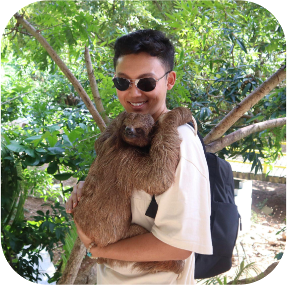
I am a third-year PhD student in the Autonomous Intelligent Robotics (AIR) research group at the State University of New York at Binghamton, supervised by Prof. Shiqi Zhang. I am also a research scientist intern in FAIR Labs at Meta working with Chris Paxton. In 2023, I spent time visiting the Learning Agents Research Group (LARG) at the University of Texas at Austin, supervised by Prof. Peter Stone. In 2022, I was a student researcher at Google Brain, co-advised by Montserrat Gonzalez and Fei Xia. I obtained my bachelor's degree from Renmin University of China in 2019.
My goal is to develop learning and planning algorithms that enable autonomous robots to perform service tasks in home environments. In particular, I'm interested in: 1) Learning for integrated task and motion planning. 2) Foundation models for long-horizon decision making. 3) Coordinated whole-body motion generation. 4) Multimodal and interactive robot perception.
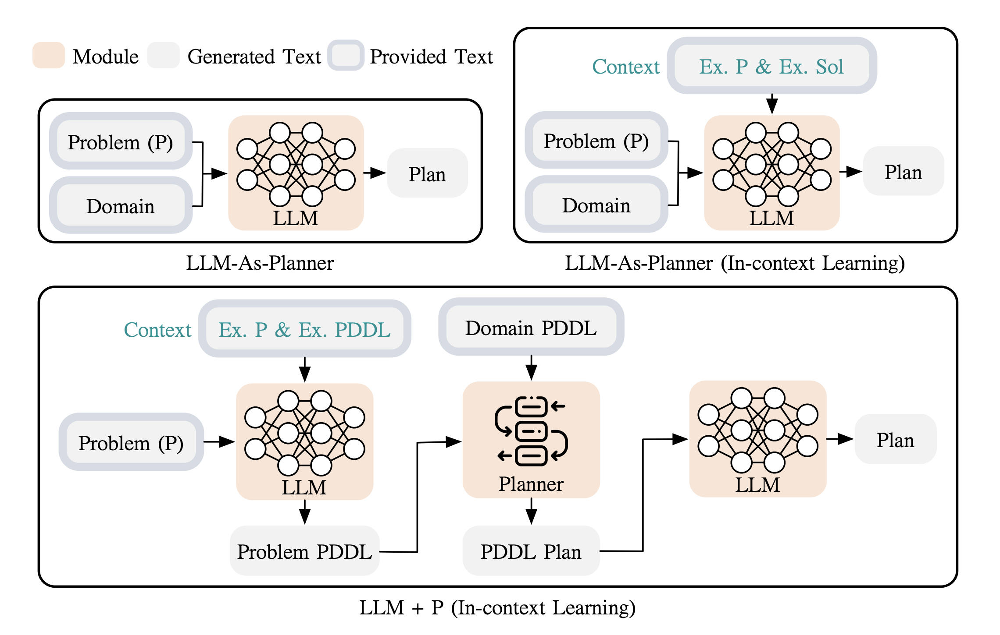
ArXiv, 2023
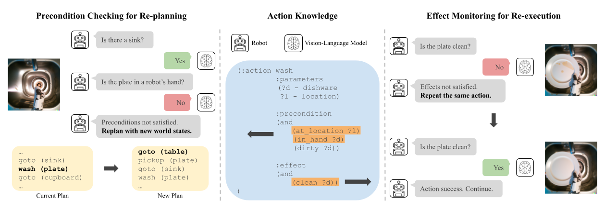
ICRA Workshop on Robot Execution Failures and Failure Management Strategies, 2023
[Paper]
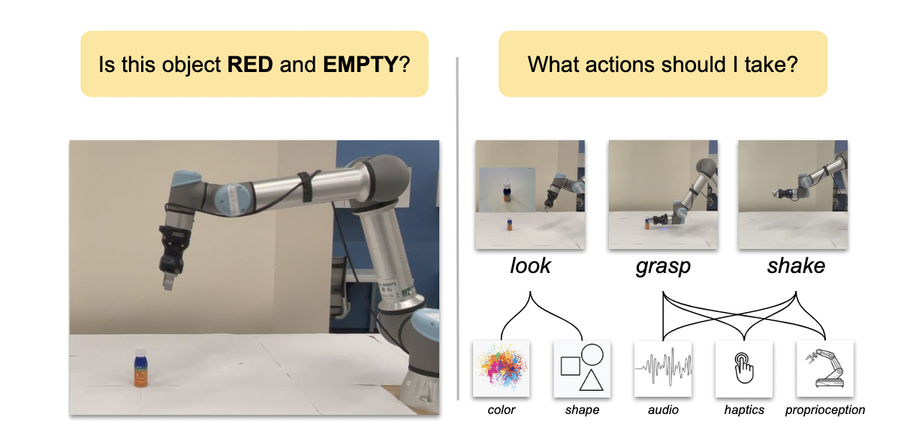
Autonomous Robots Journal (AURO), 2023
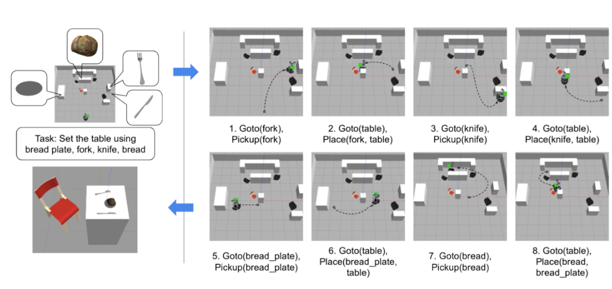
ArXiv, 2023
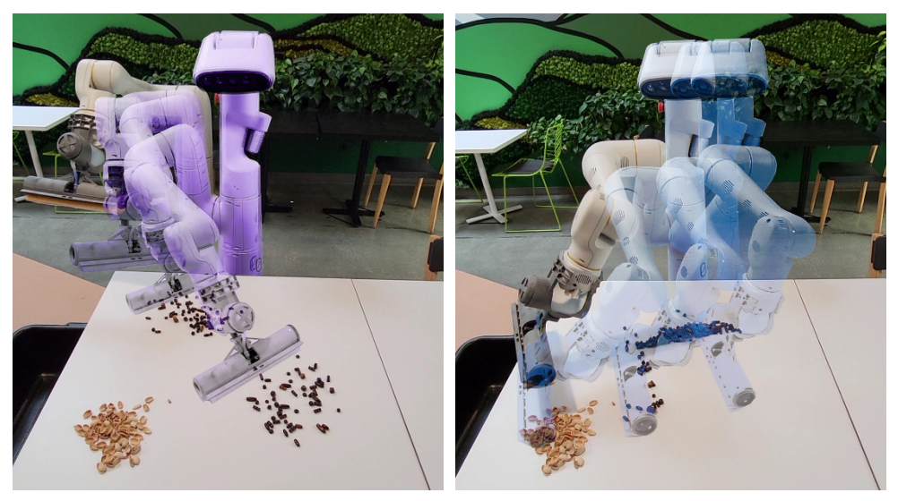
IEEE International Conference on Robotics and Automation (ICRA), 2023
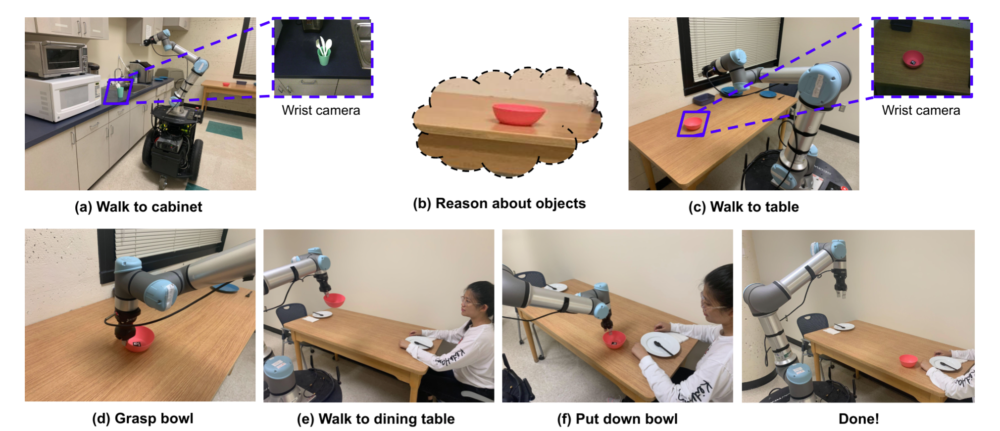
ArXiv, 2022
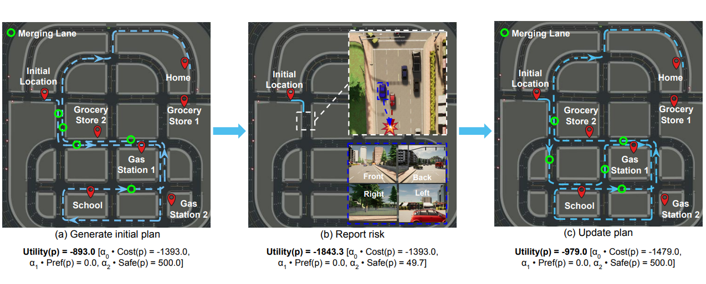
ArXiv, 2022
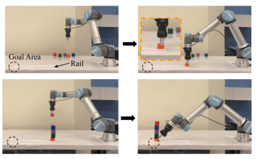
IEEE Robotics and Automation Letters (RA-L), 2022
[Paper] [Project Webpage]
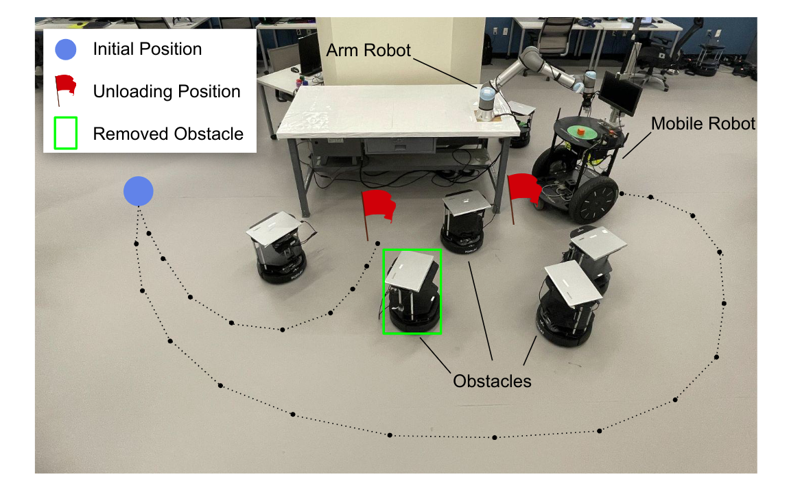
IEEE International Conference on Robotics and Automation (ICRA), 2022
[Paper] [Project Webpage]
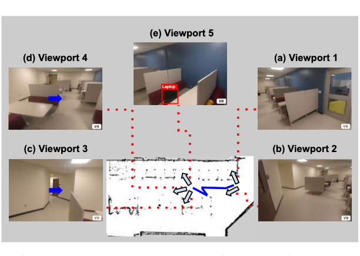
IEEE/RSJ International Conference on Intelligent Robots and Systems (IROS), 2021
[Paper] [Project Webpage] [Short Paper]
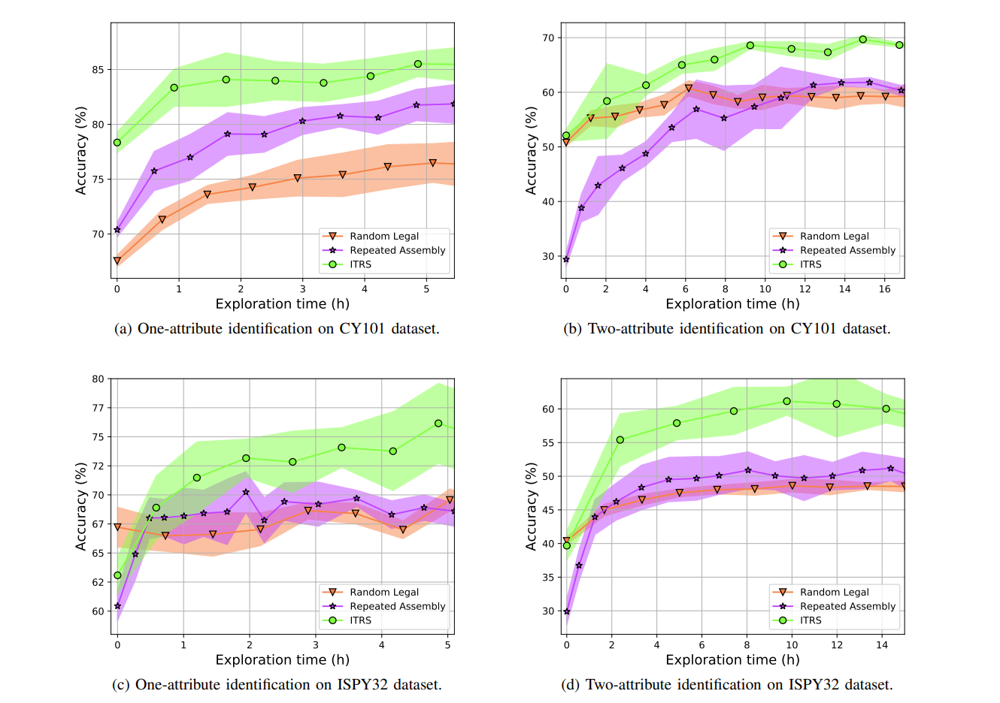
Robotics: Science and Systems (RSS), 2021
[Paper] [Project Webpage] [Short Paper]
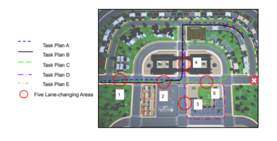
IEEE/RSJ International Conference on Intelligent Robots and Systems (IROS), 2020
[Paper] [Project Webpage]